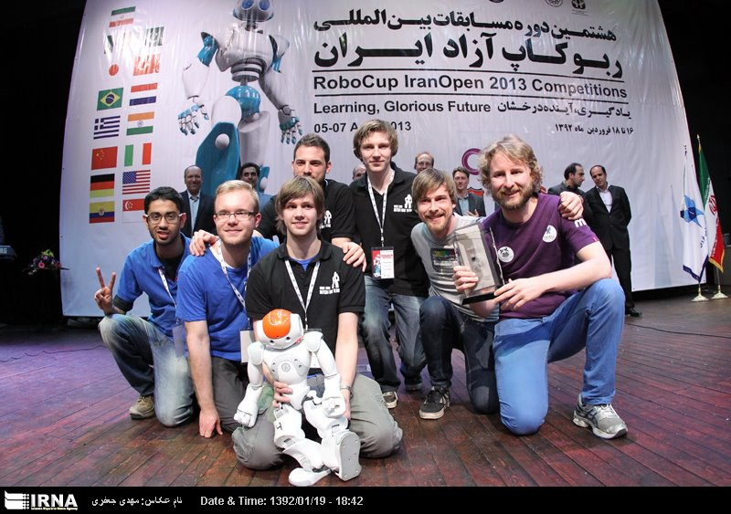

Georgios Methenitis
PhD. Artificial Intelligence
Senior Machine Learning Engineer @ Sennder
Barcelona, Spain
Follow @GiorgosMethe

Welcome to my personal webpage
My interests focus on multi-agent systems (learning, mechanism design, game-theory), e-commerce and double-sided market settings, design of pricing mechanisms (e.g., auctions) in settings with supply and/or demand uncertainty, analysis of emergent market behavior via agent-based simulation, game theoretical analysis of pricing strategies in competitive markets, and evolutionary algorithms.
News
Based on the results of my master thesis, presented at GECCO '15: Publication , GitHub project
My paper "Incentivizing Intelligent Customer Behavior in Smart-Grids:..." has been accepted for publication at @ijcai16 #ijcai16 NY :)
— Georgios Methenitis (@g_methe) April 5, 2016
 The tool can load an arbitrary electricity standard load profile from a csv file, it can then generate synthetic data in any scale, for the discrete, or continuous cases.
The tool can load an arbitrary electricity standard load profile from a csv file, it can then generate synthetic data in any scale, for the discrete, or continuous cases.
Curriculum Vitae
I graduated from the Technical University of Crete with a Diploma in Electronic and Computer Engineering in 2012, and a Master's degree in Artificial Intelligence from the University of Amsterdam in 2014.
Dutch Nao Team places third in Robocup Iran Open 2013
As a MS.c. student I was a Teaching Assistant and a member of the Dutch Nao Team, a student team participating in the RoboCup - Standard Platform League.
I conducted my MS.c. thesis (Novelty search for soft-robotic space exploration) in collaboration with the European Space Agency, where I worked in the Advanced Concepts Team during the summer of 2014.
In February 2015, I started my Ph.D research at the Centrum Wiskunde & Informatica in Amsterdam and the Delft University of Technology. I defended my doctorate dissertation on the 15th of July 2021.
From Oct. 2019 to Sep. 2021, I worked as a Senior Data Scientist at Machine Learning Programs, focusing on machine learning applications in insurance markets (e.g., competitive price predition, claim propensity models).
From Sep. 2021 to January 2023, I worked as a Data Scientist at BEAT, focusing on analysis and development of dynamic pricing strategies.
Since Feb. 2023, I am working as a Senior Machine Learning Engineer at Sennder, focusing on prototyping and productionization of pricing models in the logistics domain.
You can download my CV here:

Updated: Jan. 2025
Publications
-
Georgios Methenitis, Michael Kaisers, Han La Poutré, Degrees of Rationality in Agent-Based Retail Markets, Springer Computational Economics, 2019 -
Georgios Methenitis, Michael Kaisers, Han La Poutré, Forecast-Based Mechanisms for Demand Response, International Conference on Autonomous Agents and Multiagent Systems (AAMAS), 2019 -
Georgios Methenitis, Michael Kaisers, Han La Poutré, Renewable electricity trading through SLAs, Springer Energy Informatics, 2018 -
Georgios Methenitis, Michael Kaisers, Han La Poutré, SLA-Mechanisms for Electricity Trading under Volatile Supply and Varying Criticality of Demand, International Conference on Autonomous Agents and Multiagent Systems (AAMAS), 2017 -
Georgios Methenitis, Michael Kaisers, Han La Poutré, Incentivizing Intelligent Customer Behavior in Smart-Grids: A Risk-Sharing Tariff & Optimal Strategies, International Joint Conference on Artificial Intelligence (IJCAI), 2016 -
Georgios Methenitis, Michael Kaisers, Han La Poutré, A multi-scale energy demand model suggests sharing market risks with intelligent energy cooperatives, Smart Grid Technologies - Asia (ISGT ASIA), 2015 IEEE Innovative, 2015 -
Georgios Methenitis, Daniel Hennes, Dario Izzo, Arnoud Visser, Novelty Search for Soft Robotic Space Exploration, Proceedings of the 2015 Annual Conference on Genetic and Evolutionary Computation, 2015 -
Georgios Methenitis Evolution of Soft Robots by Novelty Search, Master Thesis, University of Amsterdam, The Netherlands 2014 -
Georgios Methenitis, Patrick de Kok, Sander Nugteren, Arnoud Visser, Orientation finding using a grid based visual compass, Belgium Netherlands Artificial Intelligence Conference, 2013 -
Georgios Methenitis, Player Behavior and Team Strategy for the RoboCup 3D Simulation League, Diploma Thesis, Technical University of Crete, Greece 2012
Contact
Email: giorgos [dot] methe [at] gmail [dot] com